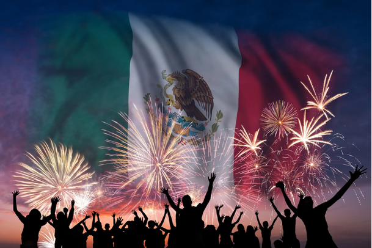

16 de septiembre, día de la independencia, el aniversario oficial del inicio de esta lucha y un día de descanso obligatorio en el país.
|
El 16 de septiembre es oficialmente el Día de la Independencia de México. A diferencia del día 15, que se centra en el festejo folklórico de la víspera, el 16 es el día formal de conmemoración cívica y descanso obligatorio en todo el país.
|
¿Qué sucedió el 16 de septiembre de 1810?
- El inicio real del movimiento: Entre las 5:00 y las 6:00 de la mañana, Miguel Hidalgo convocó formalmente a la población en el atrio de la Parroquia de Dolores.
- Liberación de presos: Antes de dar el Grito, Hidalgo, Allende y Aldama marcharon hacia la cárcel de Dolores para liberar a los presos políticos y comunes, sumándolos a las filas insurgentes.
- El primer "Ejército": Al salir de Dolores con rumbo a San Miguel el Grande, el contingente armado inicial no sumaba más de 600 hombres mal armados con picas, machetes y herramientas de labranza. Horas más tarde, al pasar por el santuario de Atotonilco, Hidalgo adoptó el estandarte de la Virgen de Guadalupe como la primera bandera del movement.
Mitos y Curiosidades del 16 de septiembre
- El desfile militar no siempre existió: El tradicional Desfile Cívico-Militar del 16 de septiembre en la Ciudad de México se convirtió en una tradición anual obligatoria hasta 1935, por decreto del presidente Lázaro Cárdenas. Antes de eso, las celebraciones eran principalmente verbenas populares, discursos literarios y funciones de teatro.
- ¿Quién celebró el primer aniversario? El primer festejo oficial registrado del 16 de septiembre no ocurrió en la Ciudad de México ni fue organizado por Hidalgo (quien ya había sido fusilado). Lo realizó el insurgente Ignacio López Rayón el 16 de septiembre de 1812 en Huichapan, Hidalgo. Documentos históricos registran que celebró con una descarga de artillería, repique de campanas y música.
- El Pípila, ¿realidad o leyenda? Durante las primeras batallas que detonaron tras el 16 de septiembre, destaca la toma de la Alhóndiga de Granaditas gracias al "Pípila", un minero que se colocó una losa de piedra en la espalda para evitar las balas y quemar la puerta principal. Los historiadores señalan que es muy probable que el "Pípila" no fuera un solo hombre, sino un arquetipo que representó colectivamente el valor de los mineros indígenas anónimos que participaron en el asalto.
|

|